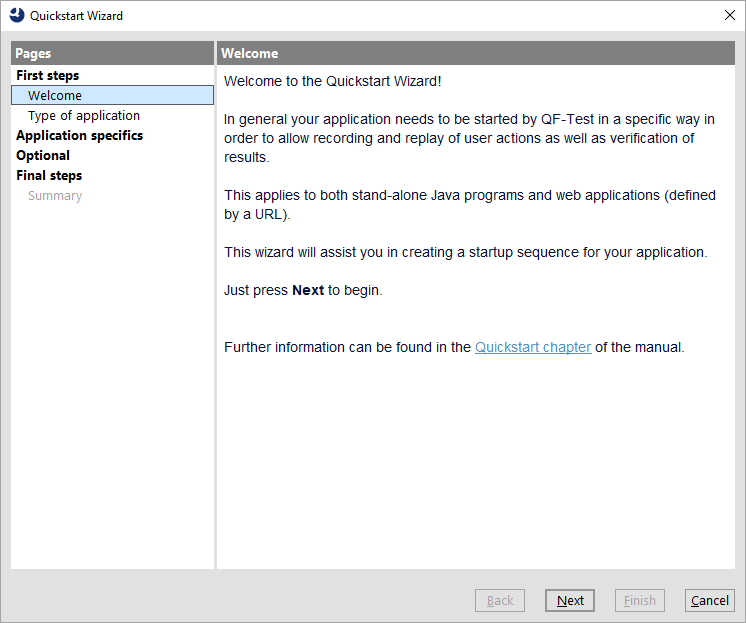
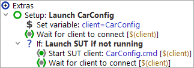

| Version 6.0.3 |
This chapter provides instructions on how to quickly set up your application as the SUT (System Under Test).
 The video 'The Quickstart Wizard
Java' shows how to work with the Quickstart Wizard for Java applications.
The video 'The Quickstart Wizard
Java' shows how to work with the Quickstart Wizard for Java applications.
The video 'The Quickstart Wizard Web' shows the Quickstart Wizard for web applications.
In order to make you application recognized by QF-Test as SUT it basically needs to be started out of QF-Test. There are a number of special process nodes available within the »Insert«-»Process nodes« to perform this task but the straight forward way is to use the Quickstart Wizard as described below. For those with an aversion to wizard dialogs, the manual way is explained at section 42.1.
A precondition for testing Java based SUTs is that QF-Test can hook into the GUI toolkit:
Swing For Swing/JavaFX or combined Swing/JavaFX and SWT applications QF-Test hooks into the Java's JVM Tool Interface. Normally QF-Test can do this directly. Only for some non-standard JDKs it may be necessary to instrument those first. See JRE deinstrumentation for details if necessary.
JavaFX For JavaFX applications and respective combinations the connection works exclusively via the QF-Test agent. Please ensure the option Connect via QF-Test agent is activated.
SWT For Eclipse/SWT based applications, an instrumentation of the SWT library may be necessary. The Quickstart Wizard, which is described below, will automatically add the necessary step to the setup sequence. For detailed technical information please see section 43.2.
Web Web application testing does not require instrumentation but there are some constraints to consider that are explained in chapter 13.
With the Quickstart Wizard QF-Test offers a convenient utility for creating a startup sequence for your application.
You can open the Quickstart Wizard via the »Extras«-»Quickstart Wizard...« menu item or the toolbar button. Please follow the steps which should be self explanatory.
|
|  | ||
|
| Figure 3.1: Quickstart Wizard | ||
As result the Wizard delivers a startup sequence under the "Extras", as shown in the following figure:
|
|  | ||
|
| Figure 3.2: Startup sequence created by the Quickstart Wizard | ||
The created setup sequence varies depending on the specific type of the application. But all of them follow the same standard. At the beginning you will find a 'Set variable' node which specifies the name of the SUT client for QF-Test. This node is followed by a 'Wait for client to connect' node that checks whether its necessary to start the application. The subsequent 'If' evaluates the result of its predecessor and contains the start steps for your application. The actual launch takes place in the start node which is specific to the type of application. That node is followed by an other 'Wait for client to connect' node which ensures that QF-Test connects to your application during the startup procedure. (Details about the different start node types and attributes can be found in section 42.1.)
SwingJavaFX For Swing or JavaFX based applications the setup sequence typically is straight forward except for Applet testing in a browser or Java WebStart applications which uses some special procedures from the standard library.
SWT For SWT based applications an additional procedure call node for SWT instrumentation is added.
Web The standard startup sequence for web includes some additional nodes for setting variables, initializing browser cache and cookie settings and possibly install an AJAX toolkit resolver. See chapter 13 for further information about starting a web based SUT.
The setup sequence can be executed directly after creation via selecting the green setup sequence node in the tree and pressing "Replay"
toolbar button  .
.
When executing the setup sequence your application should start up and the "Start recording" button in the QF-Test toolbar should become activated which indicates that QF-Test is properly connected to the SUT.
Now you are able to record and replay your first test sequences as described in chapter 4. There is also a learning by doing tutorial available from the QF-Test help menu which guides you through all features of QF-Test.
In case you are facing an error message or the red "Start recording" button stays inactive, please proceed with the following paragraph.
If your application (or the browser window in case of web testing) doesn't come up at all:
If the SUT gets visible but QF-Test is not able to connect to the client
(ClientNotConnectedException):
qfs.swt.instrument.setup.
After possibly having adapted your test-suite or settings retry executing your setup sequence. If you are not getting any further you might want to consider trying a sample test-suite from the tutorial or you contact our support.
The standard output and error streams of all processes started by QF-Test are captured and stored in the run-log under the node that represents the respective starter node. In this QF-Test does not distinguish between SUT clients and arbitrary processes or shell scripts started with a 'Start process' or 'Execute shell command' node.
The main window contains a shared terminal view that shows the output of all processes started by a test that was run from this window. The »View«-»Terminal« sub-menu holds items to configure whether this terminal is visible, whether the tree or the terminal should use the are in the lower left corner, whether long lines are wrapped and whether it is automatically scrolled to the end when new output arrives. Other items let you clear the terminal or save its contents to a file. The maximum amount of text that the terminal holds is configurable in the option Maximum size of shared terminal (kB).
In addition to the shared terminal, for each active or recently terminated process there is an individual terminal window that shows its output. These individual terminal windows can be opened from the »Clients« menu. The shared terminal's intention is to provide visual feedback whenever new output arrives, while the individual terminals are better suited for actually studying that output.
Active processes can also be stopped with the help of the »Clients« menu, either individually in the respective sub-menu or all at once with »Clients«-»Stop all«.
The number of terminated clients that are kept in the »Clients« menu is set with the option Number of terminated clients in menu. If your processes generate lots of output and you are low on memory you may want to reduce that number.
Note The »Clients« menu also serves well in case you are not sure which specific QF-Test product you need to purchase. The GUI technologies used by your applications are shown in '[ ]' next to the active client name. The example below shows two clients using Java swing and web which suggests to buy a QF-Test/swing+web license.
|
|  |
||
|
| Figure 3.3: GUI technology information | ||
If a second Java VM is started from an already connected SUT, QF-Test will recognize this as an indirect connection attempt from a child process of the first SUT and automatically assign an artificial client name to this new SUT. The name is created by appending ':2' to the client name of the parent SUT, signifying that this is the second process for this client. Yet another Java VM started by either of these SUTs would get ':3' appended to the original client name unless the second process was already terminated so the ':2' was again free for use.
To summarize, the sequence for connecting to an indirectly started SUT typically consists of an event node that triggers something like a button click or menu selection, causing the SUT to launch the second SUT, followed by a 'Wait for client to connect' node for the ':2' extended client name.
| Last update: 9/6/2022 Copyright © 1999-2022 Quality First Software GmbH |